01 / 18
鱼搭 · AI 数字衣柜网站
02 / 18
路演目录
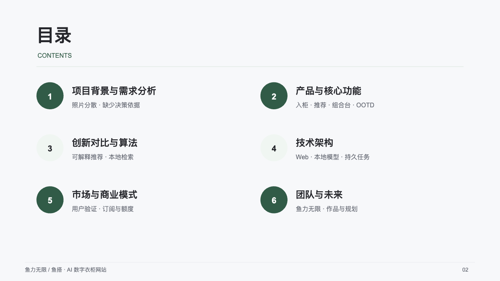
03 / 18
为什么衣柜满了仍不知道穿什么
04 / 18
把衣柜变成决策资源
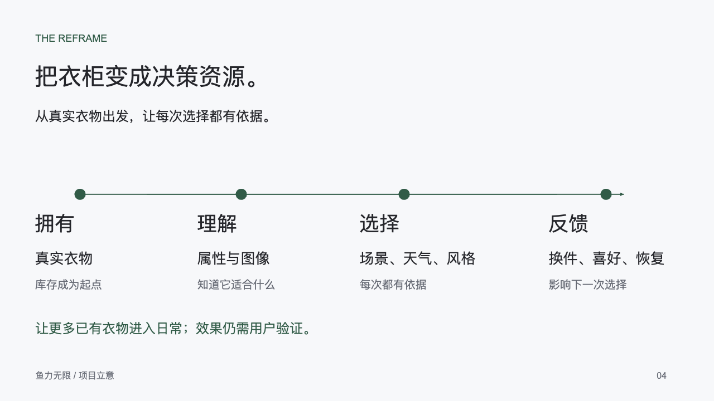
05 / 18
拍照入柜，在网站里管理衣橱
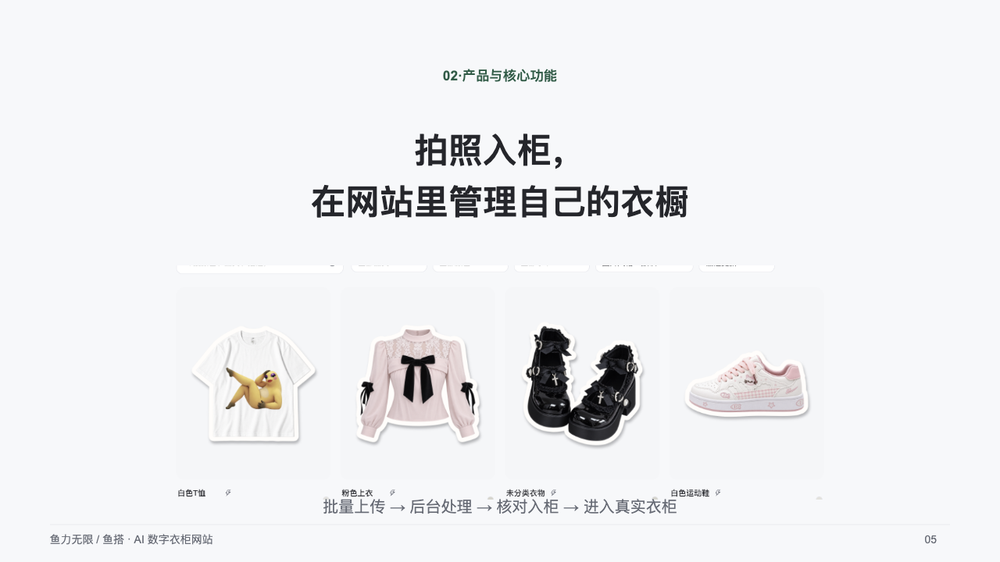
06 / 18
从入柜到出门的功能闭环
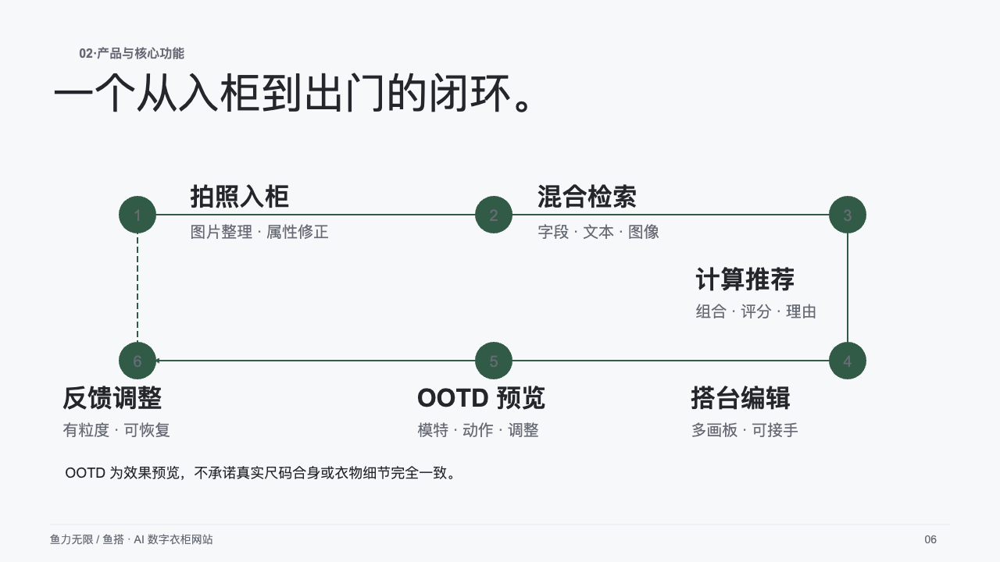
07 / 18
浏览器里的真实衣柜与组合台
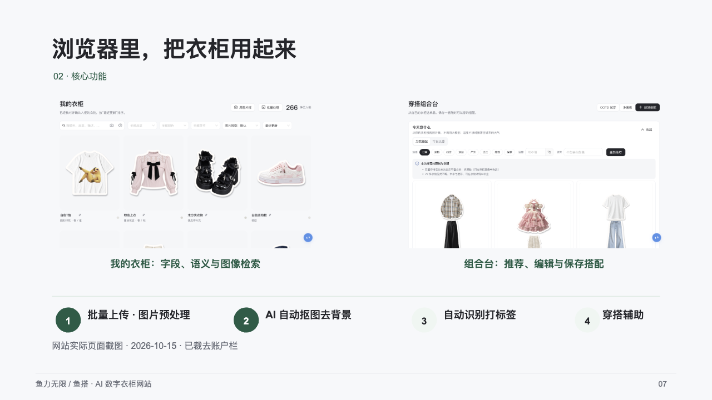
08 / 18
用户问题与可解释的实现机制
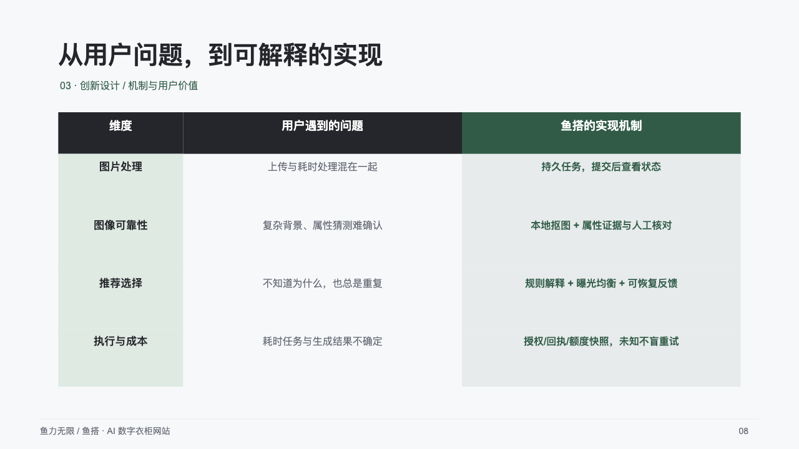
09 / 18
照片入柜的三道可靠性工序
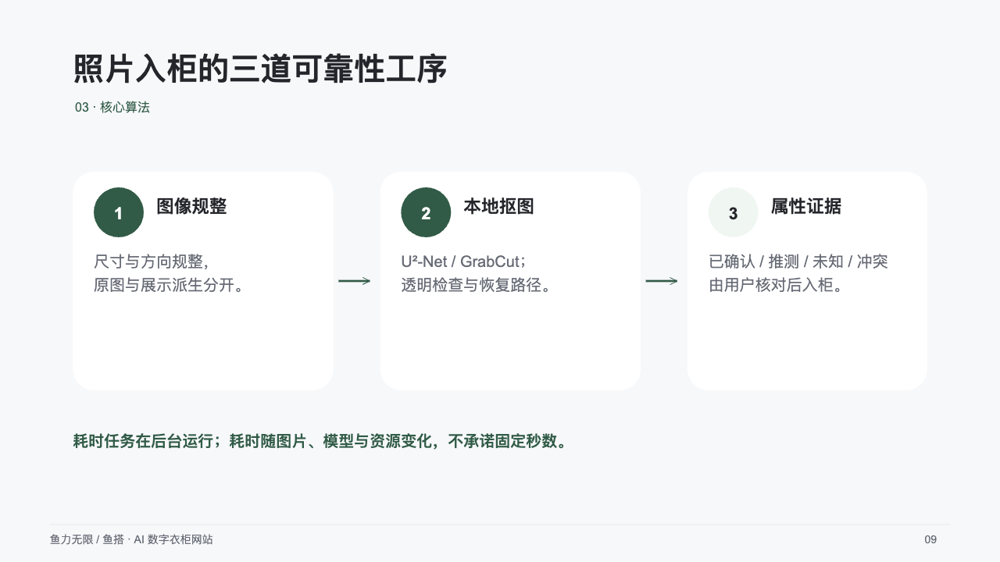
10 / 18
推荐算法与动态变化
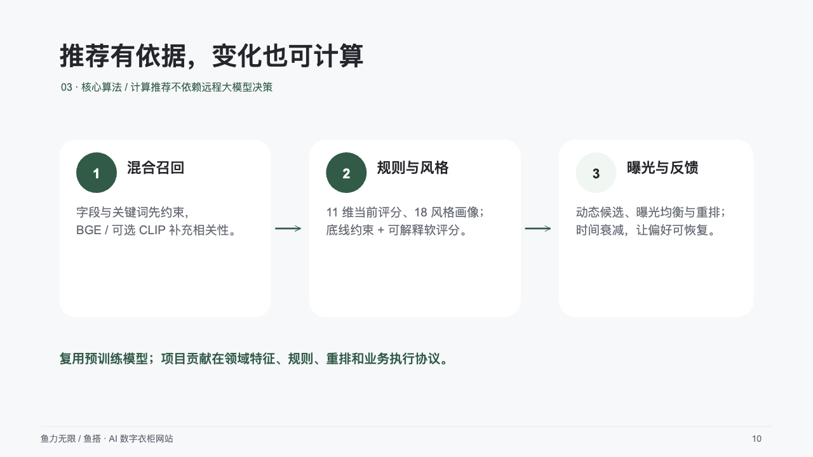
11 / 18
网站技术架构
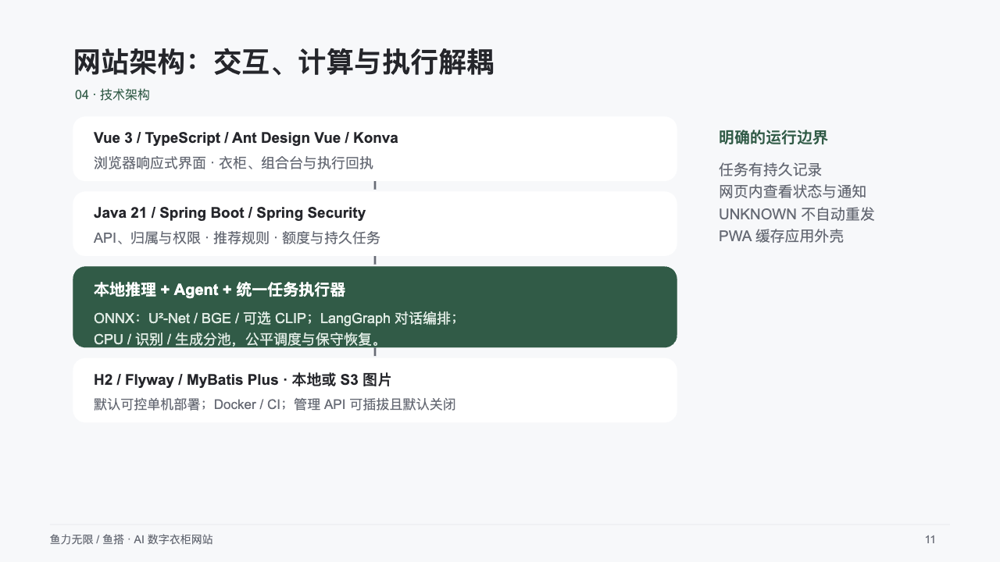
12 / 18
目标用户与共创验证
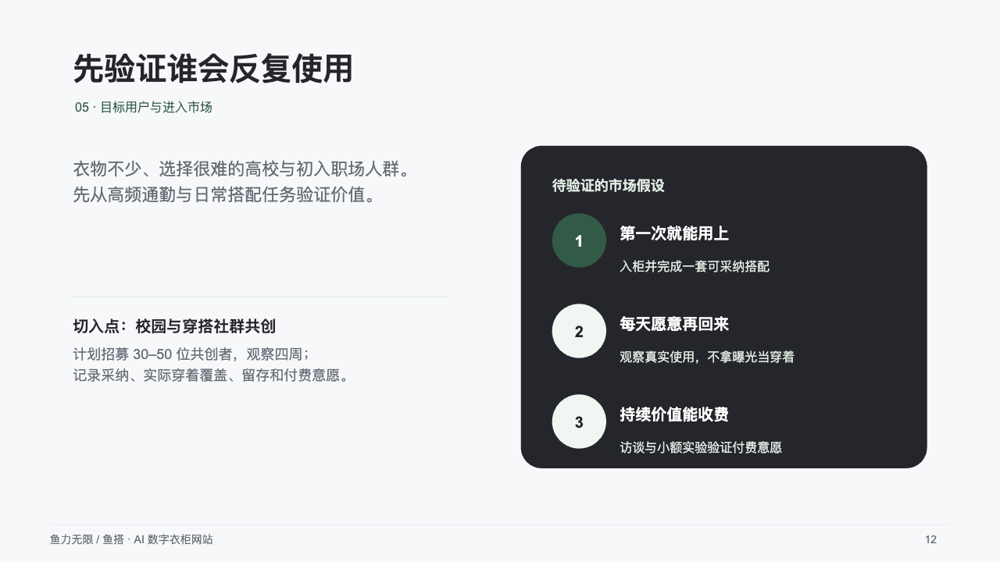
13 / 18
商业路径与收入情景
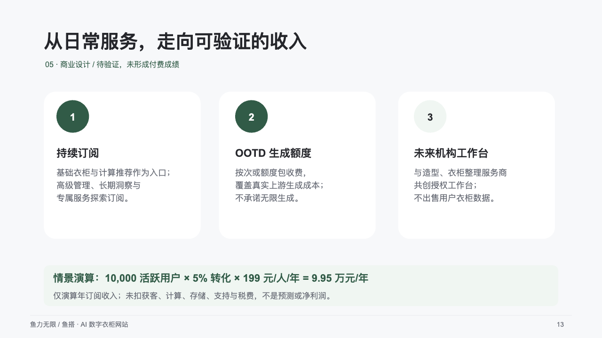
14 / 18
当前实现进展
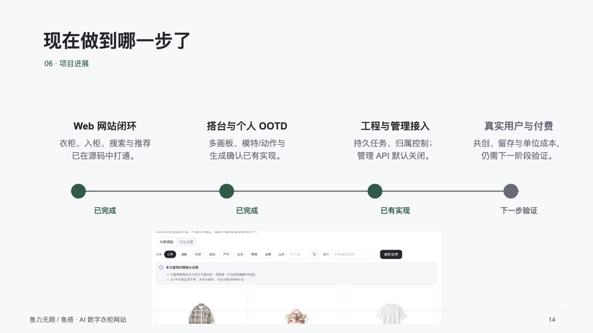
15 / 18
历史模拟与证据边界
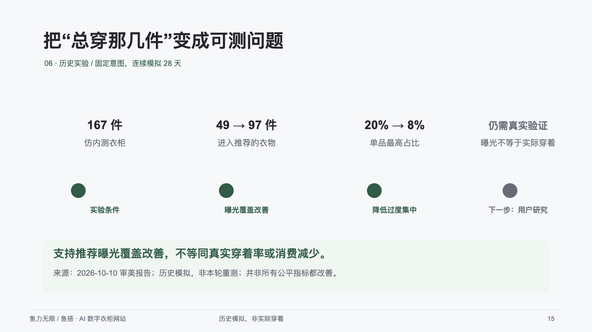
16 / 18
鱼力无限团队
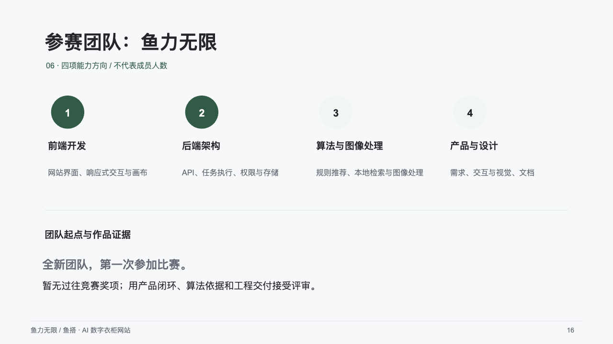
17 / 18
下一阶段验证路线
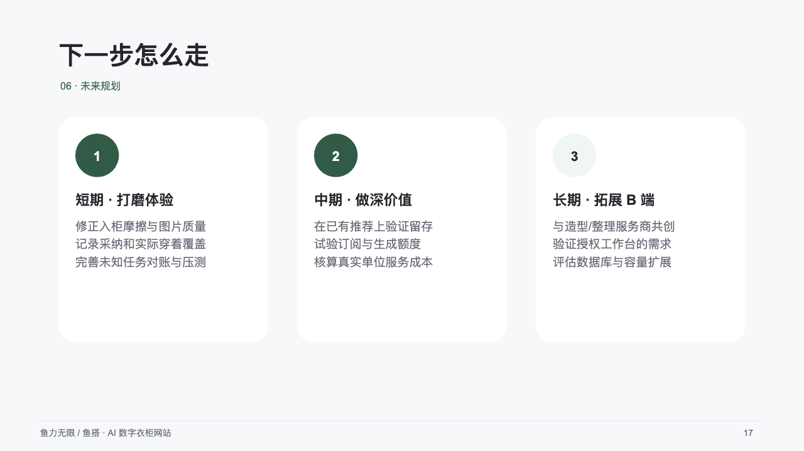
18 / 18
结束与网站演示
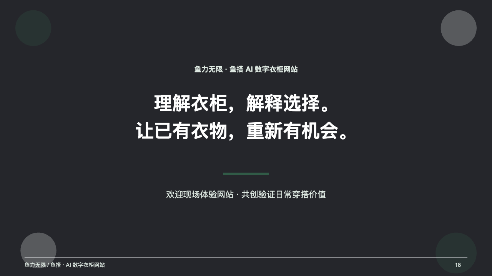